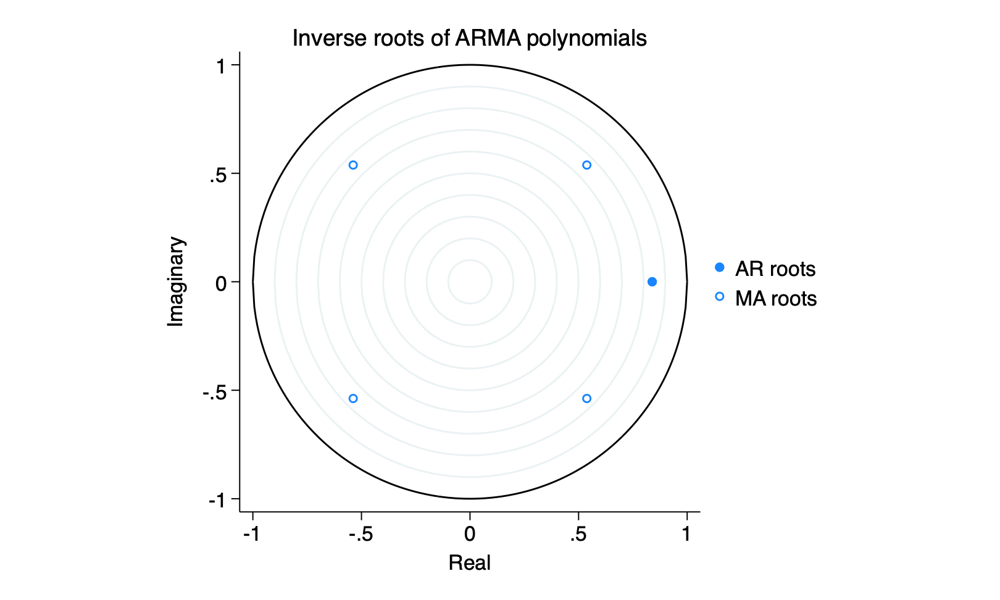

I was mistaken about one thing that I said yesterday and I need to correct it. There are stability conditions for the ar and ma processes that revolve around the roots of the characteristic equations. The so-called stationarity and invertability conditions. They are implemented by default in R’s arima package but they can be checked with relative ease in both stata and R.
In particular, having estimated an ar process ar(p), the characteristic equations in the slides give a \(p^{th}\) order polynomial that we can solve for the charateristic roots. There is an invertability condition for an ma(q) that gives a \(q^{th}\) order polynomial. After estimating an ARIMA(p,d,q) model, they can be easily checked. In both cases, the complex roots should lie outside the unit circle. We more frequently examine the inverse roots and ask whether or not they are inside the unit circle.
Taking the British government popularity data
Registered S3 method overwritten by 'tsibble':
method from
as_tibble.grouped_df dplyr
── Attaching packages ──────────────────────────────────────────── fpp3 1.0.1 ──
✔ tibble 3.3.0 ✔ tsibble 1.1.6
✔ dplyr 1.1.4 ✔ tsibbledata 0.4.1
✔ tidyr 1.3.1 ✔ feasts 0.4.1
✔ lubridate 1.9.4 ✔ fable 0.4.1
✔ ggplot2 3.5.2
── Conflicts ───────────────────────────────────────────────── fpp3_conflicts ──
✖ lubridate::date() masks base::date()
✖ dplyr::filter() masks stats::filter()
✖ tsibble::intersect() masks base::intersect()
✖ tsibble::interval() masks lubridate::interval()
✖ dplyr::lag() masks stats::lag()
✖ tsibble::setdiff() masks base::setdiff()
✖ tsibble::union() masks base::union()
library (haven)<- read_dta (url ("https://github.com/robertwwalker/Essex-Data/raw/main/br7983.dta" )) %>% mutate (month = as.character (month)) %>% mutate (month = paste0 ("19" ,month, sep= "" )) %>% mutate (date = yearmonth (month, format= "%Y%m" ))<- br7983 %>% as_tsibble (index= date) %>% autoplot (govpopl) + hrbrthemes:: theme_ipsum () + labs (y= "logged Government Popularity" )
The best model seems to be ar(1) and sma(4).
<- arima (br7983$ govpopl, order = c (1 ,0 ,0 ), seasonal= list (order= c (0 ,0 ,1 ), period= 4 ))
Call:
arima(x = br7983$govpopl, order = c(1, 0, 0), seasonal = list(order = c(0, 0,
1), period = 4))
Coefficients:
ar1 sma1 intercept
0.8392 0.3350 3.4889
s.e. 0.0760 0.1316 0.0997
sigma^2 estimated as 0.008444: log likelihood = 45.47, aic = -82.95
acf (arima (br7983$ govpopl, order = c (1 ,0 ,0 ), seasonal= list (order= c (0 ,0 ,1 ), period= 4 ))$ residuals)pacf (arima (br7983$ govpopl, order = c (1 ,0 ,0 ), seasonal= list (order= c (0 ,0 ,1 ), period= 4 ))$ residuals)
White noise. Parameters are all likely different from zero. What about the characteristic roots?
Registered S3 method overwritten by 'quantmod':
method from
as.zoo.data.frame zoo
Note that these are the inverse characteristic roots. And all are inside the unit circle. So this model is stationary and invertible.
What about Stata?
. arima govpopl, ar(1) ma(4)
(setting optimization to BHHH)
Iteration 0: Log likelihood = 40.962134
Iteration 1: Log likelihood = 44.723724
Iteration 2: Log likelihood = 44.866662
Iteration 3: Log likelihood = 45.127431
Iteration 4: Log likelihood = 45.434671
(switching optimization to BFGS)
Iteration 5: Log likelihood = 45.471498
Iteration 6: Log likelihood = 45.472428
Iteration 7: Log likelihood = 45.473906
Iteration 8: Log likelihood = 45.473963
Iteration 9: Log likelihood = 45.474094
Iteration 10: Log likelihood = 45.474098
ARIMA regression
Sample: 0 thru 47 Number of obs = 48
Wald chi2(2) = 97.18
Log likelihood = 45.4741 Prob > chi2 = 0.0000
------------------------------------------------------------------------------
| OPG
govpopl | Coefficient std. err. z P>|z| [95% conf. interval]
-------------+----------------------------------------------------------------
govpopl |
_cons | 3.488899 .1376348 25.35 0.000 3.21914 3.758658
-------------+----------------------------------------------------------------
ARMA |
ar |
L1. | .8391349 .0952577 8.81 0.000 .6524332 1.025837
|
ma |
L4. | .3351339 .1690192 1.98 0.047 .0038624 .6664055
-------------+----------------------------------------------------------------
/sigma | .091893 .0090176 10.19 0.000 .0742189 .1095671
------------------------------------------------------------------------------
Note: The test of the variance against zero is one sided, and the two-sided
confidence interval is truncated at zero.
. estat aroots
Eigenvalue stability condition
+----------------------------------------+
| Eigenvalue | Modulus |
|--------------------------+-------------|
| .8391349 | .839135 |
+----------------------------------------+
All the eigenvalues lie inside the unit circle.
AR parameters satisfy stability condition.
Eigenvalue stability condition
+----------------------------------------+
| Eigenvalue | Modulus |
|--------------------------+-------------|
| -.5380091 + .5380091i | .76086 |
| -.5380091 - .5380091i | .76086 |
| .5380091 + .5380091i | .76086 |
| .5380091 - .5380091i | .76086 |
+----------------------------------------+
All the eigenvalues lie inside the unit circle.
MA parameters satisfy invertibility condition.
Notice stata tells you how to interpret the result.
